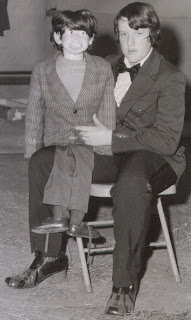

Storyteller "Gus"
12/5/2010
{kind=link}

From Tom Ladshaw:Hi Clinton....
I got a real kick out of seeing that Craig Lovik figure pictured on your blog. When I got my first "professional" figure for Christmas in 1972, that's the exact same figure I got. He was "Gus" in the Storyteller Studios brochure. Funny...I never thought of him as having a frown.... I just thought his was the one photo in the catalog that looked a little "different"...like he had a character unlike all the rest.
My parents were worried sick when they got the box and opened it. They were sure I was going to burst into tears upon seeing that figure and have the unhappiest Christmas ever! At that time, it wasn't all that unusual for a vent figure to be delivered that bore only the slightest resemblance to the catalog photo. And Craig had obviously spared no expense when it came to airbrushing his catalog "models"!
My folks needn't have worried. I *loved* that figure. He was a "Professional Ventriloquial Figure", after all! He had a real hair wig, moving eyes and CROSSING eyes (though there was no actual control on the headstick for the crossing eyes feature...and it took several hours of fiddling before I figured out how to make them work. To this day, I believe Craig either forgot to put on the control or simply couldn't figure out a control that would work!)! I also thought "Gus" was cool because he had that nifty "living mouth". It didn't matter to me that his legs were horribly out of proportion to his torso...or that his feet continually pointed backwards when he sat on my knee...or that his wig looked like a reject from a thrift store. He was MINE.
In the best tradition of the Irish-named vent characters (McCarthy, Mahoney, O'Day, et al), I kept the "Gus" moniker and added "Malone". I used "Gus" for many years....he accompanied me to Europe, Scandanavia, South America, Canada, Asia, etc. He once went missing on a plane flight from Austin, TX to New Orleans. He was found two days later in a bathroom in the Philadelphia airport! I can't begin to imagine the shock someone must've had when they opened the case in the restroom and saw that little fella staring back at them.
"Gus Malone" still sits proudly in my collection today. He's a little battle-worn, that's for sure. And I haven't used him in a show for many years. But every once in a while, I'll pick him up and we'll talk about the "good ol' days". One thing, though....he's never told me what *really* happened during his Philadelphia adventure.
Can't wait to see how the one you're working on turns out!
Best,
Tom